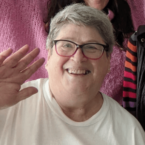
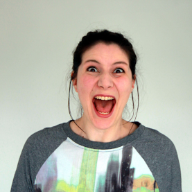
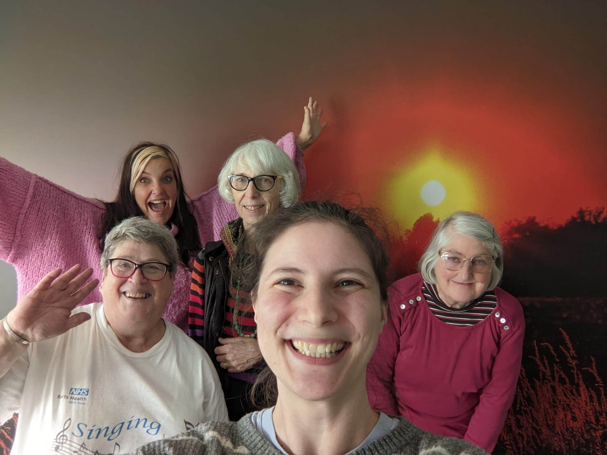

Singing for Breathing RLH (Royal London Hospital) is a musical health group for people who want to learn to better manage breathlessness through singing in a friendly local community.
What happens in a Singing for Breathing session?
Our sessions will help you with breathing exercises and relaxation techniques, and the fun of singing. The sessions are designed to be enjoyable and foster community, as well as to help with your symptoms and breath control.
Warm-up
The session will start with a warm-up to prepare your body and get you ready to sing. This will probably include:
gentle physical warm-up
breathing exercises
vocal exercises such as call-and-response, exploring rhythm and vocal range
The breathing exercises will help you to control feelings of breathlessness, develop helpful breathing habits, and coordinate your breath with movement. You will learn to use your diaphragm to breath and make sound, developing a healthy and efficient breathing pattern over time.
Music
Your singing facilitator will choose songs that are suitable for people with breathlessness or with a lung condition and, that are enjoyable for all. If there's a song you love (or a song you don't want to sing) we take that on-board. In our online sessions, those who want to can come off mute while we take turns to sing each line of a well-known song.
We sing songs from a variety of styles in a few ways: call-and-response, together as a group, in rounds with the melody starting at different times or, in parts where you can sing harmonies in a comfortable register. The group likes to learn music from many cultures and languages. View our songbook for an idea of the songs we usually sing.
Is Singing for Breathing right for me?
Regular singing as part of a group is good for your general health and wellbeing, and for improving your quality of life if you’re living with a lung condition. You don't need to be a good singer, or an experienced singer to join in. We always say, it's not about the singing - it's about the breathing!
Our sessions are aimed at those who experience breathlessness, including anyone suffering from COPD (chronic obstructive pulmonary disease), asthma, long-COVID, pulmonary fibrosis, or any other lung-health problem - and is open to anyone living with breathlessness of any cause and, their carers. You do not need a referral to join the group.
Sessions are led by an Asthma+Lung UK trained Singing for Breathing facilitator. You have the freedom to join in at your own pace, and sessions are appropriate for seated or standing participation.
Get involved
Sessions are long, and are held weekly on Wednesdays at . The group meets online, with monthly in-person sessions in Stratford (with online access). All our sessions are free to attend.
Register
Our sessions are open to those living or working in or around the Newham area. If we're not local to you, you can find support in your area on the Asthma+Lung UK support network.
You can register to join Singing for Breathing RLH by emailing singingforbreathingrlh@gmail.com. You will be required to provide your address so we can reach you in case of an emergency during a session.
Connect with us
Online via Zoom
We use Zoom for our online sessions and for remote access to in-person sessions.
If you're not familiar with Zoom, we recommend you get set up before your first session to learn how it works. You can use Zoom's Meetings Guide to download and install the software to your device, and find out how to join a meeting and connect your audio.
In-person at The LightHouse, Stratford
The LightHouse38 Celebration Avenue, Stratford, London E20 1DB
The LightHouse is a ground-floor venue with lots of natural light and lovely open acoustics. It's located 's walk from Stratford International Rail and DLR Stations and from Stratford Underground and Rail Stations via Westfield Shopping Centre. Celebration Ave is served by TFL bus routes 97 and 108.
The venue has free Wi-Fi, an accessible toilet with baby change mat, adjustable lighting with dimmers and blinds, and temperature controls. There is a kitchen with access to drinking water.
Entry to the space is via a wide door and entrance way (this non-automatic door is heavier than usual and takes some effort to open; if you have difficulty there will be someone to open the door). Access to the venue from the pavement, and all spaces within, is step-free. There is lots of space for buggies and buggy-parking.
What we do
“
I was aware that lots of people have problems with their breathing that go on for years and years and there's only so much that drugs and inhalers can help with. —Dr. Anna Moore
Singing for Breathing has been running since and started at the Royal London Hospital. It was set up by Dr Anna Moore, a respiratory doctor at Barts Health, who recognised the need for a group that could offer therapeutic activity to help with breathlessness management, along with social support on a regular, long-term basis, free of cost for participants.
The benefits of singing include reducing breathlessness and improving wellbeing. We have a growing evidence-base for the management of breathlessness, particularly in chronic lung disease, and the potential to significantly improve health equity. Singing and breathing exercises is helping patients and, improving the care they’re given.
Anna is a respiratory doctor at The Royal London and St Bartholomew’s hospitals, a medical educator, mum and, Joint Vice Chair of Green at Barts. She has been highly commended as London’s Public Sector Individual Changemaker of the Year at Global Action Plan's Sustainable City Awards 2022.

Catherine Furlong
(she/her) Co-Founder and Volunteer Secretary
bio
Cleo Lane
(she/her) Singing Facilitator
Cleo is a singer, songwriter, arranger, community choir director, and singing for lung health specialist. She is a member of the natural voice network proving singing is everyone regardless of musical experience or ability. She is also a singing lead with Breathe Arts Health Research.
Heather Heather
(she/her) Volunteer Organiser
bio
Stella Stella
(she/her) Volunteer Organiser
bio

Ruth Baker
(she/her) Volunteer Web Developer
Ruth is a Software Engineer who has been attending Singing for Breathing since 2022. Since joining the group her asthma has finally come under control, she's able to do more and use her reliever inhaler less. She grew up in Newham and now lives in nearby Kent.
Sue & Gabby
The LightHouse Event Space
eg The LightHouse and Gardens have kindly donated their space to us to use for our sessions.

Our Participants
at home and face-to-face
Thanks to all our group members, who participate with a song in their step! All participants are invited to attend quarterly and annual meetings as required by ask Catherine for info.
“
It's very good for socialising, and it's a benefit for my lungs.
“
Singing for Breathing has become an integral part of my personal well-being routine.
“
I can now walk without panting and along with a better diet and loss of weight have reduced my blood pressure to a point where my doctor has taken me off blood pressure medication.
“
The sessions have really helped me focus better on my breathing.
“
It's good for your mental health, and you're not alone with your condition.
“
My asthma has finally come under control, I've stopped snoring and I'm using my reliever inhaler less.
“
I have kept up a fairly active social life by joining other groups, though singing was the first.